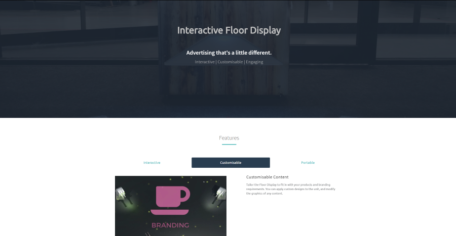
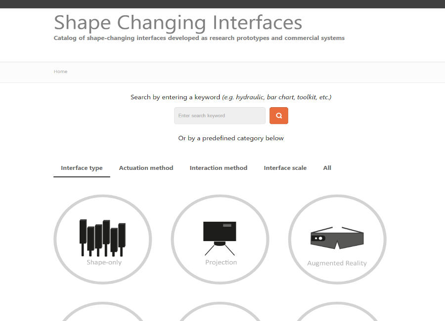
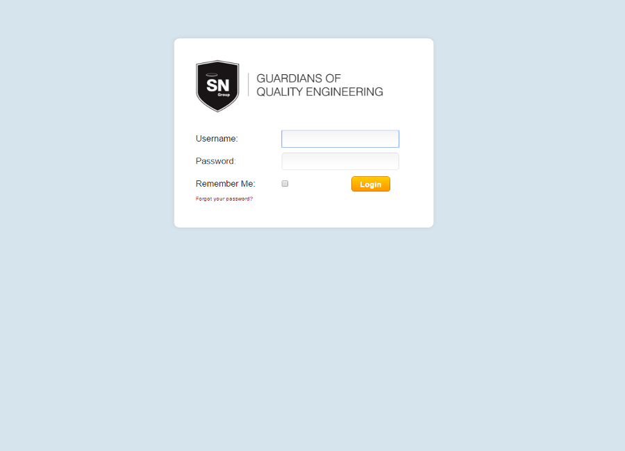

Projects
Here are some of my recently completed projects.

Link to site
Website - floor.heinventions.com
I developed a website to showcase the Floor Display - an augmented reality advertising display that uses interactive projections to engage with customers.Link to site
EMERGE: A Shape-Changing Physical and Dynamic Bar Chart
The EMERGE project involved building a shape-changing physical, and also dynamic bar chart. Imagine if on-screen 3D bar chart visualizations came to life as physical bars which you can interact with. EMERGE is made up of 100 motor controlled plastic bars, illuminated by RGB LED lights, custom-made circuit boards, and 3 Arduinos. The software consists of a C# back-end, and JavaScript/JQuery, HTML5, and a Node.js application front-end, gelled together using websocket communication. The project enabled me to gain a signficant amount of experience in managing a large scale project, CAD modelling (i.e. Autodesk Inventor), fabrication using laser cutting and 3D printing for bespoke parts, working with various materials, developing a Node.js application combined with websockets, and lots and lots of soldering.An Exploration of Actuation Techniques
This was a very different project as it involved a mixture of electronics and hardware engineering, and allowed me to build a deeper understanding of the two domains (especially as I ended up frying a few prototyping boards in the early stages when playing with higher currents). It involved developing pneumatic, hydraulic, electromagnetic, Shape-Memory Alloy based protoype actuators with basic position control capability. The objective was to formulate a taxonomy of actuation techniques for shape-changing display prototypes. The project led to a publication in the Internationl Journal of Human Computer Interaction.Link to article
Characterizing Force Input on Touch Screen Devices
This project involved looking at how much force users apply when interacting with touch screen devices like mobile phones and tablets to inform the design of force-sensitive devices. These devices use the amount of force you apply on a surface as a way of triggering different functions. I ran user studies where participants carried out common gestures such as panning, zooming, rotating and tapping in different conditions (form factor, urgency, and interaction position), and derived several 'profiles' that illustrated how force was applied. The project was heavily focused on statistical data analysis and allowed me to develop my experience in this area (especially in using R). It led to a publication at the Interactive Tabletops and Surfaces conference held in Dresden, Germany in 2014.Link to paper

Link to site
Website - shape-change.org
I developed a website (powered by Wordpress) to disseminate work on shape-changing interfaces. The goal was to enable researchers and developers of shape-changing interfaces to have access to a resource where they can easily find previous work.Link to site

Website - shapeclip.com
I developed a responsive website to showcase and provide resources for ShapeClip, a project that aimed to simplify the process of prototyping shape-changing interfaces.Link to site
